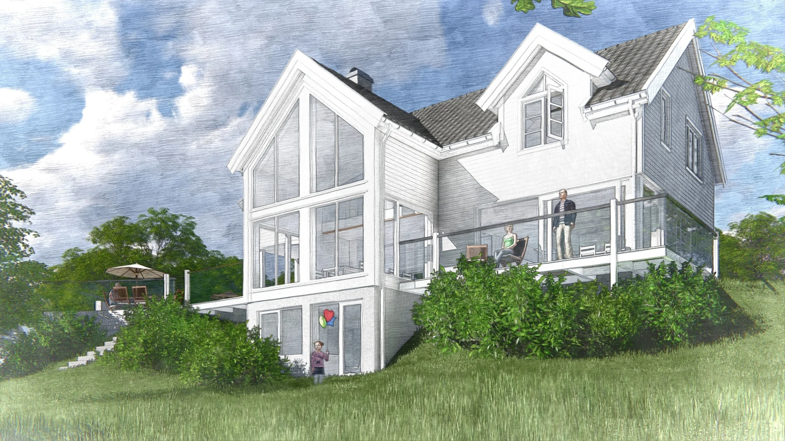

Enebolig Sætre
Enebolig / Sætre, Asker
Tradisjonelle / Sætre, AskerTradisjon i
Tradisjon i
nytt lys.
Et lyst boliguttrykk med saltak og store vindusflater. Prosjektet i Sætre viser hvordan et tradisjonelt formspråk kan møte en åpen forbindelse til hagen.
- Sted
- Sætre, Asker
- Prosjekttype
- Enebolig
- Presentasjon
- Arkitekturvisualisering
- Arkitektur
- BJH Arkitekter